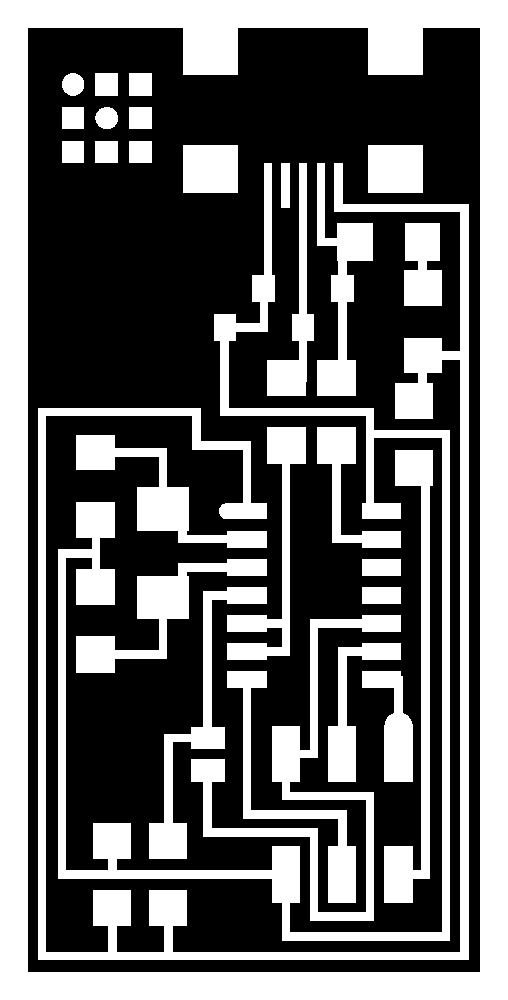
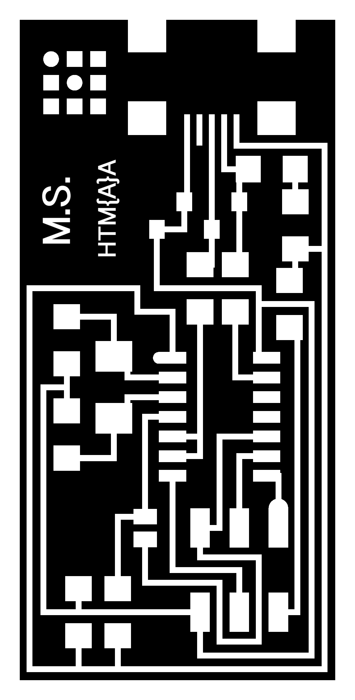
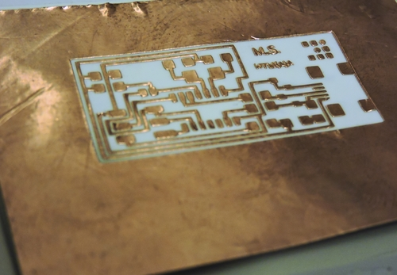

Week TWO.
Electronics Production
Main Page
Electronic Assembly
This week's theme was about electronics production--it was solely focused on the fabrication (not merely for fabrication sake), allowing those of us without a foundation to dive into the making, so that we do begin to unpack parts of electronics design, our potential for making and creating is further heightened.
Templates
To start off, I know very little about electronics. It has been many moons since I last took Physics, since I last had to be concerned with such units and voltages and energy in such a way. A beauty of this course is that so many of these ideas that I engaged with so briefly in these seemingly former worlds are converging again. How lovely!
.So, to start in this process, I chose to use the given templates for the circuit--the Traces and Interior of ISP.44.
And with no real knowledge about how to read this, I decided that the flair that I would add would be a little of my own customization, an uninterfering declaration of sorts that I created this board--my initials, followed by those of the course: M.S. HTM{A}A
Milling
This process of cutting your template into the copper (to create what will be your circuit board) can be made through a variety of machines. I chose to use the Vinyl Cutter and the Shop Bot .
Vinyl Cutter
Working with the vinyl cutter reinforced my overall comfort with the machine, but got me thinking of possibilities to be used with such flexible circuitry. Not only is the needle used by the vinyl cutter smaller than the standard 1/64 inch bit, offering a means to make more intricate designs, but because the backing of this thin sheet of copper is adhesive, it has a wider variety for placement possibilities. This also makes me think of Jie Qi ( MIT/Technolojie) and possibilies through Paper Circuitry.

Shop Bot and Beyond
I decided to use the Shop Bot to mill my board mostly because the other mill was severely backed up. Nonetheless, a lot of the skills were similar in changing the 1/64" bit to 1/32", zeroing the board, vacuuming the copper residue, not breaking things or yourself.
Post Production Pensamientos
Now that I've been through the process, I have a much better understanding of the fundamentals of a circuit board and it's relationship to electricity and conduction. The idea of Ground, the pathways of connectivity of the copper and what it means if you accidentally connect two paths with solder that otherwise shouldn't be.
All in all to say, through this process of doing, I have very much so, gained a familiarity with several tools and understanding to some degree their potential down the line
Other Thoughts
After the past two class sessions, it has become very clear to me that software is my arch nemesis!! My challenge is not so much about learning the variety of commands and tools, but figuring out which steps (specific to these specific programs) will allow me to build the specific parts to get to this specific thing I envision for the week. So, in some ways, I have a week to play around in this software and figure out what ways I can use what I know and combine with things I have learned to design and engineer the pieces that I will need.
Here's a video I made, in practicing software, the documenting process, and reflecting in my world.